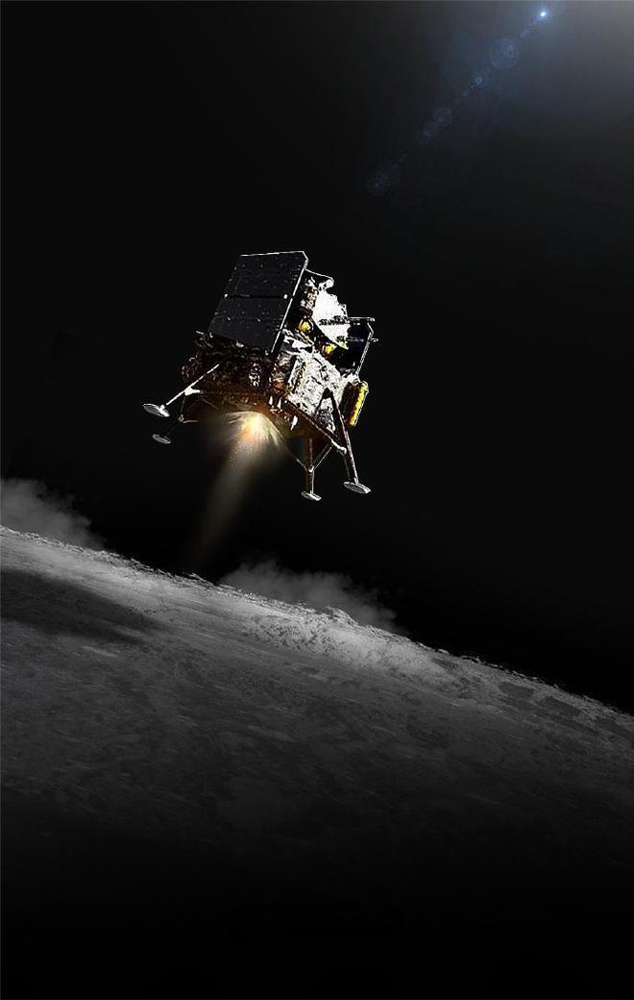

载人航天
神舟飞船的辉煌历程
从神舟五号首次载人飞行到神舟十四号，中国航天员完成了多次太空任务，为人类太空探索事业增添了浓墨重彩的一笔。
航天员的训练与成就
航天员们经历了严格的选拔与训练，为每次任务的成功奠定了坚实基础。他们在太空中执行科学实验、维护设备，并推动了人类对宇宙的认识。
未来展望

中国的载人航天事业还在不断发展，未来计划包括更长时间的太空驻留、更远距离的探索，以及与其他国家的深度合作。
从神舟五号首次载人飞行到神舟十四号，中国航天员完成了多次太空任务，为人类太空探索事业增添了浓墨重彩的一笔。
航天员们经历了严格的选拔与训练，为每次任务的成功奠定了坚实基础。他们在太空中执行科学实验、维护设备，并推动了人类对宇宙的认识。
中国的载人航天事业还在不断发展，未来计划包括更长时间的太空驻留、更远距离的探索，以及与其他国家的深度合作。